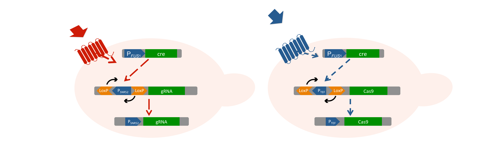
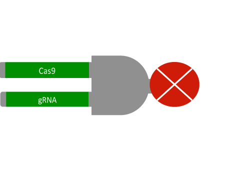

Introduction
Lung cancer is one of the most common cancer forms today and due to the lack of good detection methods, it is one of the deadliest. A suggested approach for detection of the disease have been to use specific volatile organic compounds (VOCs) that have been found in elevated levels in the breath of lung cancer patients.
The aim of this project is to detect two of these VOCs with a biosensor made of Saccharomyces cerevisiae. The VOCs will be detected by G-protein coupled receptors (GPCRs) which will activate the pheromone pathway and initiate mating between a- and α-cells. The output, a colony color change, will be achieved by partially deleting the ADE2 gene with a CRISPR/Cas9 system in the fused cell. The colony color change in the biosensor will indicate presence of VOCs in the patient’s exhaled breath.
Background
Lung cancer is the cancer form with the highest death toll, causing 1.69 million deaths globally in 2015 [1]. One reason for the high death toll is the late detection of the cancer, due to symptoms starting to appear first in the later stages.
Three different stages are used to characterize lung cancer; I, II and III. The magnitude of the disease is based on size of the tumor and the extent of spreading to lymph nodes and other organs in the body [2]. A majority of the lung cancer cases today are diagnosed in stage III with a 5-year survival rate of 5-14%. An earlier detection at stage I or II would increase the figure to 45-49% which clearly show that early detection is a key to increase the chances of surviving lung cancer [3].
At the appearance of the first symptoms, a chest X-ray is used today to scan for tumors. The scan can indicate the position and size of the tumors. Despite being a non-invasive procedure, it is accompanied by limitations such as cost, time, expertise and sensitivity required for X-ray examinations. Due to these limitations X-ray is not suitable for mass screening of lung cancer [4]. Therefore, there is a demand for new diagnostic tools with mass screening potential.
One of the most promising approaches for early diagnosis is the use of volatile organic compounds (VOCs) as biomarkers. Some specific VOCs can be detected in higher concentrations in the breath of lung cancer patients compared to healthy individuals. The cancer cells have an increased oxidative rate that results in oxidative stress products found in the breath of patients. The low concentration of VOCs, pmol/l, has provided a challenge in using this approach for detection and no efficient screening method is yet available [5].
Studies have shown that there is not only one compound that can be used as a biomarker in the breath of cancer patients [5]. An optimal diagnostic tool would therefore be able to detect multiple VOCs in order to decrease the number of false positive diagnoses. One example of a diagnostic tool is a biosensor, which is a biological-based system that can detect the presence of a target analyte and convert it into a signal. A biosensor can be developed with many different species, antibodies or enzymes. In this case, a yeast-based biosensor is a suitable approach and some of the advantages are the ease of genetic manipulation, as well as the cheap and easy cultivation [6].
To create this novel, non-invasive diagnostic tool, the budding yeast Saccharomyces cerevisiae will be used as a biosensor. The yeast cells will have two xenogeneic olfactory receptors incorporated. These can bind the biomarkers that are present in the breath of lung cancer patients, opening up for the possibility to detect the cancer before any symptoms appears.
The biosensor
The aim of this project is to detect two VOCs that have been found in elevated levels in the breath of lung cancer patients, using a biosensor made of Saccharomyces cerevisiae. Two of the most commonly found VOCs; butanone and n-octanal, are chosen for detection [7, 8]. The VOCs will be detected by G-protein coupled receptors (GPCRs) with the ability to activate the pheromone pathway in yeast and thereby initiate mating between a- and α-cells. The final output will be a color change due to deletion of the ADE2 gene using gRNA and Cas9. The colony color change will indicate the presence of the target VOCs, and thereby also lung cancer.

Signal
Natively, yeast have GPCRs regulating the cell mating through activation of the pheromone pathway. These GPCRs, STE2 and STE3, are present respectively in the two different mating types of yeast, a and α. STE2 and STE3 bind pheromones from the other mating type and activate the pheromone pathway which enables mating. In our system STE2 and STE3 will be replaced with the GPCRs RatI7 and Olfr1258 which detect the two VOCs butanone and n-octanal respectively [7,8]. When the GPCRs sense the VOCs, the pheromone pathway will be activated which will result in expression of both the native mating genes and cloned Cre recombinase in both cell types. Binding of butanone and n-octanal will therefore lead to mating of cells, but solely if both VOCs are present.

Switch
In each mating type, a system will be integrated consisting of a promoter in the wrong direction, surrounded by mutated LoxP sites, followed by genes expressing either gRNAs or Cas9, see Figure 2. Presence of the two VOCs will lead to, besides mating, activation of the respective genes since Cre recombinase will turn the promoters in to the right direction. The loxP sites are mutated, preventing the sites from inverting back to their original direction. This ensures that the promoter is inverted into the correct direction upon GPCR activation and remains in that position [9].
AND-gate
For expression of the gRNAs, the promoter pSNR52 will be used. Together with polymerase III, the pSNR52 promoter will not translate the gRNAs into proteins [10]. Two different gRNAs will be expressed by the same promoter and the two gRNAs will be linked together with two ribozymes; HDV and Hammerhead. After expression, the ribozymes will cut themselves out and leave the two gRNAs as separate sequences [11]. For the other mating type, the strong constitutive promoter pTEF1 will be used to express the Cas9 protein. Since the gRNAs and the Cas9 protein are expressed in cells of different mating types, the lack of combination will will not disrupt the adenine synthesis in haploid cells.
After mating, the gRNAs and Cas9 will both be present in the newly formed diploid cell and assemble into a functional unit. The gRNAs will guide the Cas9 protein to two sites in the ADE2 gene, creating two different double strand breaks in the gene. The double stranded breaks will lead to a partial disruption of the ADE2 gene and an accumulation of a red intermediate during adenine synthesis [12]. The color shift of the cells from white to red will function as a diagnostic response.
References
[1] Cancer [Internet]. World Health Organization; 2017 [Cited 2017-06-13]. Available at: http://www.who.int/mediacentre/factsheets/fs297/en/
[2] Non-Small Cell Lung Cancer Stages [Internet]. American Cancer Society; 2016 [Updated 2017-03-02; Cited 2017-06-26]. Available at:
https://www.cancer.org/cancer/non-small-cell-lung-cancer/detection-diagnosis-staging/staging.html
[3] Non-Small Lung Cancer Survival Rates, by Stage [Internet]. American Cancer Society; 2016 [Updated 2016-05-16; Cited 2017-06-13]. Available at:
https://www.cancer.org/cancer/non-small-cell-lung-cancer/detection-diagnosis-staging/survival-rates.htm
[4] Lungcancer [internet]. Cancerfonden; 2015 [Cited 2017-06-07] Availiable at: https://www.cancerfonden.se/om-cancer/lungcancer
[5] D’Amico A, Pennazza G, Santonico M, Martinelli E, Roscioni C, Galluccio G, Paolesse R, and Di Natale C. An investigation on electronic nose
diagnosis of lung cancer. Lung Cancer, 68(2):170–176, 2010.
[6] French C, de Mora K, Joshi N, Elfick A, Haseloff J, and Ajioka J. Synthetic biology and the art of biosensor design. The Science and Applications
of Synthetic and Systems Biology:Workshop Summary, 2011.
[7] Minic J, Persuy M-A, Godel E, Aioun J, Connerton I, Salesse R, and Pajot-Augy E.
Functional expression of olfactory receptors in yeast and development of a bioassay for odorant screening. FEBS Journal, 272(2):524-537, 2005.
[8] Suzuki Y and Shimono K. Deciphering the receptor repertoire encoding specific odorants by time-lapse single-cell array cytometry. Scientic Reports, 6(19934):1-9, 2015.
[9] Carter Z and Delneri D. New generation of loxp-mutated deletion cassettes for the genetic manipulation of yeast natural isolates. Yeast, 27(9):765-775, 2010.
[10] DiCarlo JE, Norville JE, Mali P, Rios X, Aach J, and Church GM. Genome engineering in saccharomyces cerevisiae using crispr-cas systems.
Nucleic Acids Research, 41(7):4336-4343, 2013.
[11] Fujita T and Fujii H. Applications of engineered dna-binding molecules such as tal proteins and the crispr/cas system in biology research.
International Journal of Molecular Sciences, 16(10):23143-23164, 2015.
[12] Ugolini S and Bruschi CV. The red/white colony color assay in the yeast saccharomyces cerevisiae: epistatic growth advantage of white ade8-18,
ade2 cells over red ade2 cells. Current Genetics, 30(6):485-492, 1996.
[13] Kofahl, B. and Klipp, E., Modelling the dynamics of the yeast pheromone pathway. Yeast, 21: 831–850, 2004